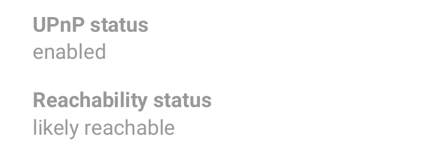

Helping other CENO users browse the Web¶
A peer-to-peer network is built from every node connected to it (yes, that means you as well). The more nodes, the stronger and more versatile the network becomes. If you are running the CENO Browser from a country that does not censor the Internet (or not as heavily as some), consider helping other CENO users by becoming a bridge node. You will then begin to route traffic between clients living in heavily censored countries and CENO injectors. You will not be able to see their traffic (it will be sent through an encrypted tunnel) nor will any of this traffic remain on your device.
Note: The configuration described in this section may also help your device to effectively seed content to others on the distributed cache, so please consider applying it as well when using CENO in a censoring country (but keep in mind the risks of serving such content to others).
How to become a CENO bridge¶
This functionality is already built into the CENO Browser. Your device will need to be connected to a Wi-Fi network that has UPnP enabled. The CENO Settings page will indicate the UPnP status on your network.
Note: Enabling UPnP on the Wi-Fi router may expose devices on your network to external interference. Please make yourself aware of the risks and also consider using alternative methods as explained below.
A status like the one shown in the previous figure indicates that UPnP is not enabled on your WiFi router.
The status above indicates that UPnP is likely working and CENO is currently verifying connectivity.

The status above indicates that UPnP is working and you can bridge connections for other CENO users.
Enabling UPnP on your Wi-Fi router¶
There are many Wi-Fi routers on the market and each has their own particular features. Herein a list of some manufacturers’ instructions for enabling UPnP:
Alternative methods to allow CENO bridging¶
Instead of enabling UPnP on your router, you can create a port forwarding rule, to make sure that connections from the CENO network are forwarded to your device. You will need to login to the router’s administration interface and locate the port forwarding option. To see which IP address you need to forward the connections to and the relevant port, open the CENO Settings page and look under the Local UDP endpoint(s).
The port forwarding must be for the UDP protocol (not TCP). CENO chooses a random port on first run and keeps it for subsequent runs, but your device’s local network IP address may change from time to time. Thus you should periodically review the CENO Settings page to see that your device is reachable to the CENO network.
Technical note: Alternatively, you can make sure that the router always assigns the same IP address to your device (e.g. via a static DHCP lease for the device’s MAC address).